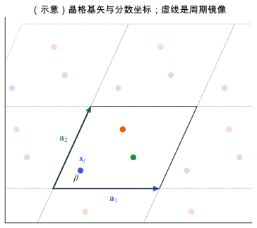

晶体结构生成模型
生成晶体要同时处理晶胞、分数坐标和周期性，分子晶体还要处理刚性分子、构象和堆积；评价也要按晶体的对称等价来算。
直观阅读需要
- 生成模型：生成模型在做什么
- 分子晶体与分子间作用：分子晶体的结构要素
只是提示，不需要先读完才能往下看。
直觉直观解释
分子生成输出的是“有限个原子”，晶体生成输出的是“周期性的无限结构”：一个晶胞加晶格平移。变量因此多了一层：
- 晶格：三个基矢决定晶胞形状与体积；
- 基元：晶胞里每个原子的分数坐标与元素种类；
- 对称性：空间群操作把不对称单元复制成整个晶胞，等价的结构有无穷多种“写法”。
生成模型要在这个空间里采样。和图像、分子相比，多出来的麻烦是：晶胞可大可小、原子数可变、坐标是环面上的、同一个晶体有无数种等价表示。这也决定了评价方式：不能只看几何有效性，还要看能量、稳定性和对称等价。

| 符号 | 是什么 | 图里对应 |
|---|---|---|
| \mathbf a_1, \mathbf a_2（三维时还有 \mathbf a_3） | 晶格基矢，组成晶格矩阵 A | 两条箭头 |
| \beta | 基矢夹角（单斜晶胞的独立参数） | 左下角 |
| \mathbf x_j | 第 j 个原子的分数坐标 | 晶胞内的点位置 |
| Z_j | 第 j 个原子的元素种类 | 点的颜色 |
| 周期镜像 | 平移整数倍基矢得到的副本 | 虚线框外的半透明点 |
定义与公式数学与推导
表示
一个晶体写成
\mathcal{C} = \left(A,\; X = \{\mathbf x_j\}_{j=1}^{N},\; H = \{Z_j\}_{j=1}^{N}\right)
其中 A \in \mathbb R^{3\times 3} 的列是晶格基矢；\mathbf x_j \in [0,1)^3 是分数坐标；Z_j 是元素种类。原子数 N 和晶胞体积都是可变的。
周期性距离：
d_{ij} = \min_{\mathbf n \in \mathbb Z^3} \left\| A(\mathbf x_i - \mathbf x_j + \mathbf n) \right\|
其中 \mathbf n 遍历所有晶格平移。任何损失、描述符和评价都必须在最小像意义下计算。
对称等价
同一个晶体可以有不同写法：换一组基矢（乘以幺模整数矩阵 U，\det U = \pm 1）、整体平移原点、或者用空间群操作把原子重新排列（见 晶体对称性与空间群）。因此“两个生成样本是否相同”不是坐标逐项比较，而是判断是否存在某个对称操作把二者对上。
生成范式
| 范式 | 代表 | 怎么生成 | 代价 |
|---|---|---|---|
| VAE + 扩散 | CDVAE | 编码器压缩到潜空间，扩散/解码器还原晶格与坐标；周期性用最小像处理 | 潜空间可能坍缩；解码器偏平滑 [Xie et al. 2022] |
| 自回归 | CrystalFormer 类 | 把“元素 + 分数坐标”排成 token 序列，逐项生成，用周期性注意力建模 | 顺序人为；误差沿序列累积 [Jiao et al. 2024] |
| 连续扩散/流匹配 | 各类晶体扩散模型 | 直接在 (A, X, H) 上演化，对称性靠等变网络或采样后投影 | 对称性处理复杂；采样步数多 |
| 条件生成 | 空间群/组成/性质条件 | 给定空间群或组成，约束输出 | 条件与等变性的兼容要设计 |
本周雷达里的 FamilySpace、CGTransformer、CrystalFormer-CSP、DSADiff 等都在这个空间里做变体，具体结构尚未精读。
评价
- 有效性 (validity)：键长、配位、电荷、原子重叠是否合理。
- 唯一性 (uniqueness)：去重后剩下多少不同结构。去重必须按对称等价，不能按原子逐项。
- 新颖性 (novelty)：与训练集和已知数据库比较。
- 稳定性：对无机晶体常用凸包以上能量 (energy above hull)；对分子晶体用相对晶格能与实验多晶型的比较。
- 命中率：生成的候选里有多少能在 CSP 排序后留下实验结构。
在本研究线里的样子对应与边界
- 有机分子晶体与无机晶体的差别：分子是刚性或半刚性单元，生成“分子位置 + 取向 + 构象”比生成所有原子坐标更合理；构象多晶型还要单独处理（见 分子晶体与分子间作用）。
- 化学知识驱动的约束：接触拓扑 (contact topology)、氢键图、质子归属（见 质子归属：盐与共晶）可以作为训练目标、采样投影或后筛选。这是主课题的核心假设之一。
- 生成之后仍要排序：生成模型给候选，晶体结构预测：搜索与排序 的能量排序和 晶体结构相似度与去重 的去重决定最终名单；生成模型的指标不能替代这些步骤。
- 用 MLIP 做快速松弛：生成的结构常有局部几何问题，先用 MACE 与等变消息传递 一类机器学习势做预优化，再送 DFT。
- 对称性条件：给定空间群生成可以显著提高有效率，但要注意条件与等变网络的兼容（见 对称性与等变性）。
常见坑对应与边界
- 去重按原子 RMSD：不处理空间群等价和分子置换，唯一性会严重失真（见 晶体结构相似度与去重）。
- 晶格基变换没处理：同一个晶体用不同基矢写出时，模型会把它当新样本；训练和评价都被污染。
- 只验证几何，不验证能量：键长合理的结构可能晶格能很高，根本无法结晶。
- 空间群偏置：训练集里 P2₁/c 等常见空间群占多数，模型对稀有空间群的覆盖率差；条件生成要检查这一点。
- 条件泄漏：用性质标签做条件时，测试集的性质分布与训练集不同，生成质量会掉。
- 忽略分子内自由度：只生成质心和取向，柔性分子的构象多晶型会被漏掉。
检验自己对应与边界
参考资料
论文Xie et al. 2022
尚未实际查阅，目前只是拟查阅书目
论文Jiao et al. 2024
尚未实际查阅，目前只是拟查阅书目
分类机器学习 · 方法 · 研究线：晶体结构生成 · 状态：草稿